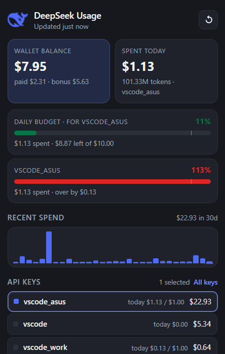
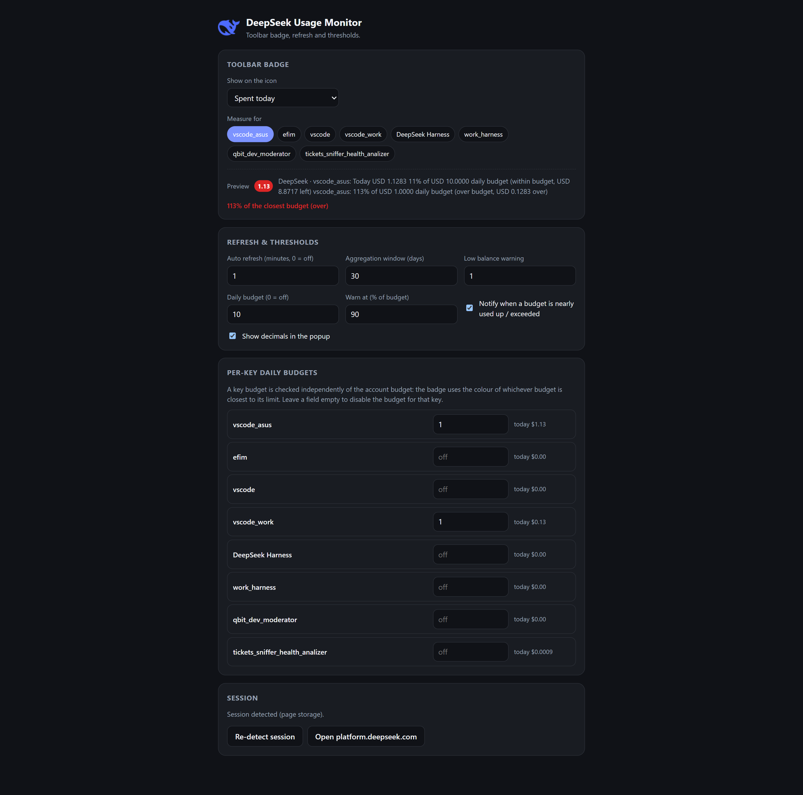
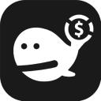

钱包余额
赠送余额与充值余额分开显示。余额低于您设定的阈值时，图标会变红。
钱包余额、今日消费与每个 API 密钥的消费、30 天图表和每日预算，直接显示在浏览器工具栏中。无需 API 密钥、无需密码、无需单独登录。

扩展只重复 DeepSeek 网页控制台本身的请求，并把它们整理成清晰易懂的面板。
赠送余额与充值余额分开显示。余额低于您设定的阈值时，图标会变红。
当天的消费金额与 token 数量。「今日」单独获取，确保数字在跨天前都准确。
可以看出哪个密钥最贵。图标和图表可以限定到单个密钥或任意密钥组合。
所选时间窗口内的每日柱状图。点击列表中的密钥，柱状图就会变成带颜色图例的堆叠分段。
今日消费、周期消费、余额或 token —— 工具栏图标显示什么，由您决定。
数据按设定的间隔在后台刷新（默认每分钟一次），也可以完全关闭。随时都有手动刷新按钮。
为整个账户设置每日预算，并为每个密钥单独设置预算。图标会根据最接近上限的预算显示为绿色、橙色或红色。
已花费 $1.13 · 共 $10.00，剩余 $8.87
已花费 $1.13 · 超出 $1.00 的 $0.13
已花费 $0.13 · 共 $1.00，剩余 $0.87
该密钥的预算已关闭
无需单独注册，也无需 API 密钥 —— 直接复用浏览器中已登录的会话。
在 Chrome 应用商店一键安装。需要 Chrome 116 或更高版本。
登录账户 —— 会话会自动识别。
首次刷新会自动完成，之后数据在后台持续更新。
深色界面、紧凑网格，没有一个多余的按钮。
余额、今日消费与 token、预算进度条、图表和 API 密钥列表。

图标指标、密钥选择、刷新间隔、统计窗口、预算与阈值。
扩展只与 platform.deepseek.com 通信，发送的只读请求与 DeepSeek 网页控制台完全相同。不保存任何 API 密钥和密码 —— 只复用浏览器中已登录的会话。所有数据只存在您自己的电脑上：没有遥测、统计、广告，也不会提供给第三方。卸载扩展，数据即被删除。
只使用余额和消费所需的控制台接口。
没有第三方服务器、CDN 或错误上报。
设置与缓存数字保存在 chrome.storage.local 中。
MIT 许可证，源码在 GitHub —— 每一行都可以检查。
不需要。扩展使用您在 platform.deepseek.com 已登录的浏览器会话，不会索取或保存 API 密钥和密码。
不会。请求只发往 platform.deepseek.com，其余数据都保存在本地。没有统计、遥测和广告。
DeepSeek 的 WAF 令牌已过期。打开一次 platform.deepseek.com，令牌会自动续期，扩展会在下次刷新时获取。扩展绝不会自行打开标签页。
未找到会话或会话已过期。请登录平台，然后在扩展设置中点击「重新识别会话」。
平台的每日序列在当天结束前不包含当天，所以扩展从按小时的序列中取「今日」数据，并单独叠加到图表上。
目前仅支持 Chrome 及基于 Chromium 的浏览器（Edge、Brave、Arc）—— 需要 Chrome 116+。

本扩展完全免费且开源。